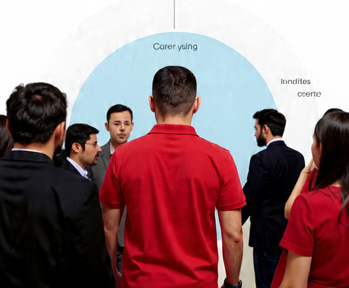

Exemple 1 :
le marché de Racine
le marché de Racine
|
Exemple 1 :
le marché de Racine |
Exemple 4 :
un thermographe dans le St-Laurent |
||
|
Exemple 5 :

les opinions à travers le monde |
|||
| üé¨ Vid√©o de 14 minutes sur les rudiments üé¨ Vid√©o de 3 minutes sur la r√©cup√©ration de fichiers de Donn√©es Qu√©bec üé¨ Vid√©o de 4 minutes sur la r√©cup√©ration de fichiers de P√™ches et Oc√©ans Canada üé¨ Vid√©o de 5 minutes sur la r√©cup√©ration de fichiers du World Values Survey üé¨ Vid√©o de 4 minutes sur la r√©cup√©ration de fichiers de micro-donn√©es de Statistique Canada | |||